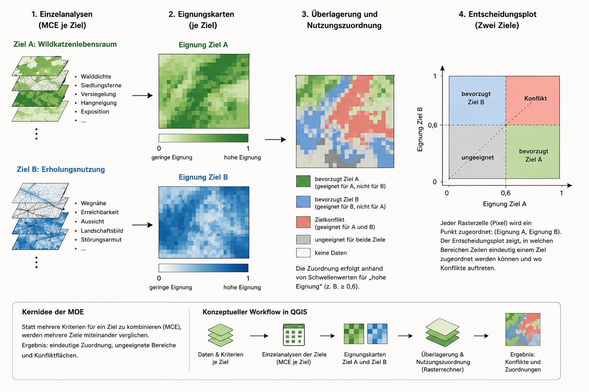

Ziel der Übung
In der vorherigen Einheit wurde die Eignungsanalyse am Beispiel potenzieller Wildkatzenhabitate im Lahntal eingeführt. Dort wurde gezeigt, wie aus ökologischen Annahmen räumliche Kriterien abgeleitet werden und wie diese Kriterien boolesch oder gewichtet miteinander verschnitten werden können.
In dieser Praxiseinheit wird diese Modelllogik in QGIS umgesetzt. Ziel ist es, aus mehreren Eingangsdaten eine einfache Eignungskarte zu erzeugen. Die Karte ist kein validiertes Habitatmodell, sondern ein methodisches Übungsbeispiel für eine rasterbasierte Multikriterienanalyse.
Ausgangsfrage
Welche Bereiche im Untersuchungsgebiet besitzen nach einem vereinfachten Kriterienmodell eine hohe potenzielle Eignung als Wildkatzenlebensraum?
Für diese Übung wird ein Fall mit einem Ziel und mehreren Kriterien betrachtet. Es geht also nicht um mehrere konkurrierende Nutzungsziele, sondern um eine Multi Criteria Evaluation (MCE): Mehrere räumliche Kriterien werden kombiniert, um die Eignung für ein Ziel zu bewerten.
Kriterienmodell
Aus der vorherigen Einheit werden folgende Kriterien übernommen:
| Kriterium | Bedeutung im Modell | Datengrundlage |
|---|---|---|
| Walddichte | Proxy für Deckung und Waldstruktur | Landbedeckung, Vegetationsindex oder Waldmaske |
| Siedlungsnähe | Proxy für Störung durch menschliche Nutzung | Gebäude- oder Siedlungsflächen |
| Hangneigung | ergänzende Reliefvariable | digitales Geländemodell |
| Exposition | ergänzende Relief- und Mikroklimavariable | digitales Geländemodell |
| versiegelte Flächen | Einschränkung / Ausschluss | Straßen, Gebäude, Versiegelungsdaten |
Die Kriterien werden nicht direkt miteinander verrechnet. Zuerst müssen sie in eine gemeinsame Eignungsskala überführt werden. Danach können sie gewichtet und addiert werden.
Arbeitsschritt 1: Problemdefinition
Die Problemdefinition lautet:
Gesucht werden Bereiche, die im vereinfachten Modell deckungsreich, störungsarm und nicht durch versiegelte Flächen eingeschränkt sind.
Damit ist klar, dass die resultierende Karte keine Beobachtung realer Wildkatzenvorkommen darstellt. Sie zeigt nur, welche Flächen nach den gewählten Regeln als potenziell geeignet bewertet werden.
Arbeitsschritt 2: Kriterien operationalisieren
Ökologische Kriterien müssen in messbare GIS-Parameter übersetzt werden. Aus „deckungsreicher Waldlebensraum“ wird zum Beispiel ein Raster der Walddichte. Aus „geringe Störung durch Siedlungen“ wird ein Distanzraster zur nächsten Siedlungsfläche.
| Ökologische Aussage | GIS-Parameter |
|---|---|
| deckungsreiche Bereiche sind günstiger | Walddichte oder Waldmaske |
| siedlungsferne Bereiche sind günstiger | Distanz zur Siedlung |
| Relief kann Standortunterschiede anzeigen | Hangneigung und Exposition |
| versiegelte Flächen sind ungeeignet | Einschränkungsmaske |
Arbeitsschritt 3: Daten in QGIS vorbereiten
Alle Eingangsdaten müssen räumlich vergleichbar gemacht werden. Sie benötigen dieselbe Projektion, dieselbe Zellgröße, dieselbe Ausdehnung und eine einheitliche NoData-Behandlung.
Typischer Zielzustand:
CRS: EPSG:25832
Zellgröße: z. B. 5 m oder 10 m
Ausdehnung: Untersuchungsgebiet
Datentyp: RasterGeeignete QGIS-Werkzeuge:
Geeignete QGIS-Werkzeuge sind:
- Rasterisieren (Vektor nach Raster): wandelt Vektordaten, zum Beispiel Siedlungsflächen oder versiegelte Flächen, in Rasterdaten um.
- Hangneigung: leitet aus dem digitalen Geländemodell die Steilheit des Geländes ab.
- Exposition: leitet aus dem digitalen Geländemodell die Hangausrichtung ab.
- Nähe / Rasterdistanz: berechnet für jede Rasterzelle die Entfernung zum nächsten Objekt, zum Beispiel zur nächsten Siedlungsfläche.
- Raster ausrichten: sorgt dafür, dass alle Raster dieselbe Zellgröße, Ausdehnung und Rasterlage besitzen.
Arbeitsschritt 4: Kriterien standardisieren
Die Eingangsdaten besitzen unterschiedliche Einheiten. Hangneigung wird in Grad oder Prozent gemessen, Siedlungsnähe in Metern, Walddichte als Index oder Klasse. Deshalb werden alle Kriterien in eine gemeinsame Eignungsskala überführt.
Beispielhafte Skala:
| Wert | Bedeutung |
|---|---|
| 0 | ungeeignet |
| 0.3 | gering geeignet |
| 0.6 | mittel geeignet |
| 1.0 | gut geeignet |
Diese Reklassifikation wird in QGIS mit Nach Tabelle neuklassifizieren durchgeführt.
Beispiel Siedlungsnähe:
| Entfernung zur Siedlung | Eignungswert |
|---|---|
| 0–100 m | 0 |
| 100–300 m | 0.3 |
| 300–600 m | 0.6 |
| > 600 m | 1.0 |
Arbeitsschritt 5: Gewichte festlegen
Die standardisierten Kriterien werden gewichtet. Die Gewichte drücken aus, wie stark ein Kriterium in das Ergebnis eingeht.
Beispiel:
| Kriterium | Gewicht |
|---|---|
| Walddichte | 0.40 |
| Siedlungsdistanz | 0.30 |
| Hangneigung | 0.20 |
| Exposition | 0.10 |
Die Summe der Gewichte soll 1 ergeben:
\[ 0.40 + 0.30 + 0.20 + 0.10 = 1 \]
Die Gewichte können fachlich begründet gesetzt oder mit einem Verfahren wie AHP bestimmt werden.
Arbeitsschritt 6: Gewichtete Verschneidung im Rasterrechner
Die gewichtete Eignung wird im Rasterrechner berechnet:
(
"walddichte_idx@1" * 0.40 +
"siedlungsdistanz_idx@1" * 0.30 +
"hangneigung_idx@1" * 0.20 +
"exposition_idx@1" * 0.10
)
*
"einschraenkung_mask@1"Die Einschränkungsmaske besitzt idealerweise nur zwei Werte:
| Wert | Bedeutung |
|---|---|
| 1 | Fläche bleibt bewertbar |
| 0 | Fläche wird ausgeschlossen |
Damit werden versiegelte Flächen, Straßen oder stark bebaute Bereiche aus der Eignungskarte entfernt oder stark abgewertet.
Arbeitsschritt 7: Ergebnis darstellen und prüfen
Das Ergebnis ist ein dimensionsloser Eignungsindex. Hohe Werte zeigen eine hohe potenzielle Eignung nach den gewählten Modellregeln. Niedrige Werte zeigen geringe Eignung oder Ausschlussflächen.
Für die Darstellung eignet sich Einkanal-Pseudofarbe mit fünf Klassen:
| Eignungswert | Klasse |
|---|---|
| 0–0.2 | ungeeignet |
| 0.2–0.4 | gering geeignet |
| 0.4–0.6 | mittel geeignet |
| 0.6–0.8 | gut geeignet |
| 0.8–1.0 | sehr gut geeignet |
Die Karte zeigt keine realen Wildkatzenvorkommen. Sie zeigt nur, welche Bereiche nach den gewählten Kriterien, Klassen und Gewichten als potenziell geeignet erscheinen. Eine Eignungskarte ohne Überprüfung durch unabhängige Daten bleibt ein Modellprodukt eine sogenannte Potenzialkarte.
QGIS-Werkzeuge für AHP und gewichtete Verschneidung
Die gewichtete Verschneidung lässt sich wie zuvor beschrieben in QGIS vollständig mit Standardwerkzeugen umsetzen. Benötigt werden vor allem die Reklassifikation der Eingangsdaten, Distanzanalysen, der Rasterrechner und gegebenenfalls der grafische Modellierer. Damit bleibt der gesamte Arbeitsablauf transparent: Jede Bewertung, jedes Gewicht und jede Rechenoperation ist direkt nachvollziehbar.
Für die Bestimmung der Gewichte können ergänzend AHP-basierte Plugins genutzt werden. Sie sind vor allem dann sinnvoll, wenn die Gewichtung nicht einfach frei gesetzt/erfunden werden soll, sondern aus dokumentierten Paarvergleichen der Kriterien abgeleitet wird. Dadurch wird sichtbar, warum ein Kriterium stärker oder schwächer in die Analyse eingeht. AHP ersetzt also nicht die fachliche Entscheidung, macht sie aber expliziter und überprüfbarer.
Geeignete Plugins sind zum Beispiel:
- Easy AHP: Plugin für AHP und Weighted Linear Combination in QGIS.
- Analyse Multicritère Hiérarchique / AHP Raster Analysis: Plugin für rasterbasierte Multikriterienanalyse mit paarweisen Vergleichen, Gewichtungsberechnung und Konsistenzprüfung.
- RasterMCDA: experimentelles Plugin für rasterbasierte MCDA-Verfahren; vor der Nutzung sollte geprüft werden, ob es in der verwendeten QGIS-Version stabil läuft.
Für die Übung bleibt der Standardworkflow mit Rasterrechner und Modellierer vorzuziehen. AHP-Plugins können ergänzend eingesetzt werden, um die Gewichte systematischer herzuleiten und die Entscheidung über die relative Bedeutung der Kriterien besser zu dokumentieren.
Exkurs Vorgehensweise beim Analytic Hierarchy Process (AHP)
Der Analytic Hierarchy Process (AHP) ist ein Verfahren, um die Gewichte einer Multikriterienanalyse systematischer herzuleiten. Die Kriterien werden dabei nicht direkt mit festen Gewichten versehen, sondern zunächst paarweise miteinander verglichen.
Für das Wildkatzenbeispiel wird also gefragt:
- Ist Walddichte wichtiger als Siedlungsnähe?
- Ist Walddichte wichtiger als Hangneigung?
- Ist Siedlungsnähe wichtiger als Exposition?
- Ist Hangneigung wichtiger als Exposition?
Die Bewertung erfolgt mit einer einfachen Vergleichsskala. Ein Wert von 1 bedeutet, dass zwei Kriterien gleich wichtig sind. Ein Wert von 3 bedeutet, dass ein Kriterium etwas wichtiger ist. 5, 7 und 9 stehen für deutlich, sehr stark oder extrem stärker gewichtete Bedeutung. Die Zwischenwerte 2, 4, 6 und 8 können verwendet werden, wenn die Entscheidung zwischen zwei Stufen liegt.
Aus diesen Paarvergleichen entsteht eine Vergleichsmatrix:
| Kriterium | Walddichte | Siedlungsnähe | Hangneigung | Exposition |
|---|---|---|---|---|
| Walddichte | 1 | 3 | 5 | 7 |
| Siedlungsnähe | 1/3 | 1 | 3 | 5 |
| Hangneigung | 1/5 | 1/3 | 1 | 3 |
| Exposition | 1/7 | 1/5 | 1/3 | 1 |
Aus dieser Matrix werden anschließend die relativen Gewichte berechnet. Ein mögliches Ergebnis wäre zum Beispiel:
| Kriterium | Gewicht |
|---|---|
| Walddichte | 0.56 |
| Siedlungsnähe | 0.26 |
| Hangneigung | 0.12 |
| Exposition | 0.06 |
Die Gewichte ergeben zusammen 1:
\[ 0.56 + 0.26 + 0.12 + 0.06 = 1 \]
Diese Werte können anschließend direkt in der gewichteten Verschneidung verwendet werden:
(
"walddichte_idx@1" * 0.56 +
"siedlungsdistanz_idx@1" * 0.26 +
"hangneigung_idx@1" * 0.12 +
"exposition_idx@1" * 0.06
)
*
"einschraenkung_mask@1"Die Multi Objective Evaluation (MOE) Von einem Ziel zu mehreren Zielen
Die bisherige Übung behandelt eine Multi Criteria Evaluation (MCE). Dabei werden mehrere Kriterien für ein Ziel kombiniert. Im Wildkatzenbeispiel lautet dieses Ziel: potenziell geeignete Lebensräume für die Wildkatze identifizieren. Die einzelnen Kriterien wie Walddichte, Siedlungsnähe, Hangneigung, Exposition und Einschränkungsflächen werden also nur im Hinblick auf dieses eine Ziel bewertet.
In realen Planungsfragen reicht das oft nicht aus. Eine Fläche kann aus Sicht des Naturschutzes geeignet sein, gleichzeitig aber auch für Erholung, Forstwirtschaft, Wegeplanung oder Umweltbildung beansprucht werden. Dann geht es nicht mehr nur darum, wo eine Fläche geeignet ist, sondern auch darum, für welches Ziel sie am besten geeignet ist und wo Zielkonflikte entstehen.
Ein Beispiel wäre:
- Ziel A: geeignete Wildkatzenlebensräume sichern
- Ziel B: Erholungsnutzung ermöglichen
- Ziel C: forstliche Nutzung erhalten
Der methodische Schritt ist dabei einfach zu verstehen: Für jedes Ziel wird zunächst eine eigene Eignungskarte erstellt. Die Wildkatzenkarte bewertet Flächen nach Kriterien wie Deckung, Störungsarmut und Versiegelung. Eine Erholungskarte würde dagegen andere Kriterien verwenden, zum Beispiel Nähe zu Wegen, Erreichbarkeit, Aussichtspunkte oder geringe ökologische Empfindlichkeit. Eine forstliche Nutzungskarte würde wiederum Kriterien wie Erschließung, Hangneigung, Bestandsstruktur oder Bewirtschaftbarkeit berücksichtigen.
Aus einer einzelnen Eignungskarte werden damit mehrere Eignungskarten:
| Ziel | Beispielhafte Kriterien | Ergebnis |
|---|---|---|
| Wildkatzenhabitat | Walddichte, Siedlungsferne, geringe Versiegelung | Eignungskarte A |
| Erholungsnutzung | Wegnähe, Erreichbarkeit, landschaftliche Attraktivität | Eignungskarte B |
| Forstliche Nutzung | Erschließung, Hangneigung, Bestandstyp | Eignungskarte C |
Genau hier beginnt die Multi Objective Evaluation (MOE). Sie fragt nicht mehr nur: Welche Flächen sind geeignet? Sie fragt zusätzlich: Welche Flächen sind für mehrere Ziele gleichzeitig geeignet? Welche Ziele schließen sich aus? Und wo muss eine planerische Entscheidung getroffen werden?
Besonders wichtig sind dabei Konfliktflächen. Eine Fläche kann zum Beispiel sowohl eine hohe Eignung als Wildkatzenlebensraum als auch eine hohe Eignung für Erholungsnutzung besitzen. Methodisch ist das kein Fehler, sondern ein wichtiges Ergebnis: Die Karte zeigt dann nicht nur Eignung, sondern auch Nutzungskonkurrenz.
Eine einfache Konfliktlogik könnte so aussehen:
| Eignung Ziel A | Eignung Ziel B | Interpretation |
|---|---|---|
| hoch | niedrig | bevorzugt Ziel A |
| niedrig | hoch | bevorzugt Ziel B |
| niedrig | niedrig | für beide Ziele wenig geeignet |
| hoch | hoch | potenzieller Zielkonflikt |
Für solche Konfliktflächen reicht eine reine Eignungskarte nicht mehr aus. Sie müssen sichtbar gemacht und anschließend fachlich oder politisch bewertet werden. GIS liefert also nicht automatisch die Entscheidung. Es macht aber transparent, wo Entscheidungen notwendig werden und welche Kriterien zu diesem Konflikt beitragen.
MCE kombiniert mehrere Kriterien für ein Ziel. MOE vergleicht mehrere Ziele miteinander. Die eigentliche GIS-Logik bleibt ähnlich, aber die Interpretation ändert sich: Aus einer Eignungsanalyse wird eine Konflikt- und Abwägungsanalyse.
Die folgende Abbildung zeigt dieses Prinzip für zwei sich teilweise ausschließende Nutzungsziele: Wildkatzenlebensraum und Erholungsnutzung.
